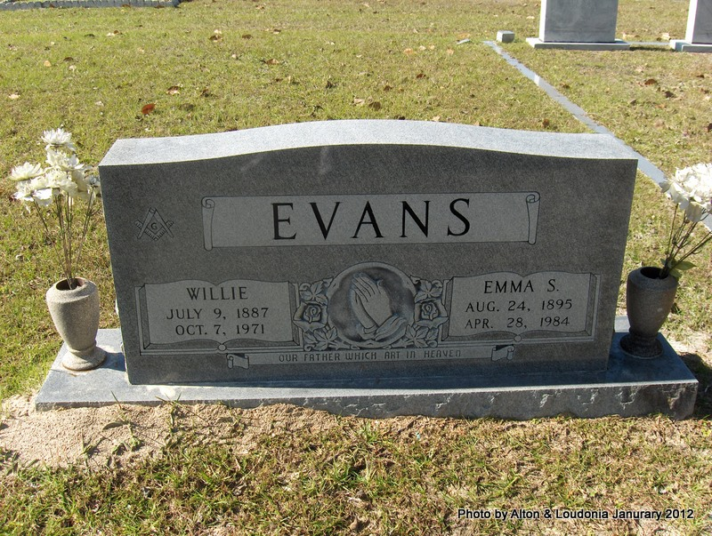

Emma Singletary
1895–1984
Life Events
Born: August 24, 1895 — Lafayette County, Florida
Died: April 28, 1984 — Palatka, Putnam County, Florida
Family
Father: Jacob A. Singletary
Mother: Ida Alla Miller
Siblings
Spouse:
Children
Military Service
No military service information has been added.
Biography
Emma Singletary Evans was born on August 24, 1895, in Lafayette County, Florida, the daughter of Reverend Jacob A. Singletary (1852–1931) and Ida Alla Miller Singletary (1873–1945). She grew up in a large family in northern Florida, where her father was a minister. Emma appears with her parents and siblings in the 1900 and 1910 United States federal censuses for Lafayette County. Her siblings included Eliza, Sallie, William Robert, Henry, Jasper, Jamie, and Giddy Singletary.
On October 24, 1915, Emma married Willie Evans (1887–1971) in Lafayette County, Florida. Their marriage license was issued on October 23 in Mayo, and the marriage was recorded on November 13, 1915, in Marriage Record Book E, page 166. The couple began their married life during a period when the timber and lumber industries were important sources of employment throughout northern Florida.
By January 1920, Emma and Willie were living in Precinct 8 of Suwannee County, Florida, in the Dowling Park area. The federal census recorded Willie working in a sawmill and identified their infant son Ernest Evans, then approximately three months old. Emma was listed as Willie's wife. The age recorded for Emma in this census appears inconsistent with her established birth date.
Dowling Park had developed into a significant lumber-producing community around the turn of the twentieth century. Large sawmill operations and railroad connections supported the timber industry and provided employment for area residents. Willie worked in this industry, although the available records do not establish which lumber company employed him.
The family remained in the Dowling Park area in 1930. The federal census recorded Willie working in a shingle or lath mill and identified two children in the household, Ernest and Gracie Evans. Emma's younger brother Jasper Singletary was enumerated in the immediately preceding household with his wife. Their consecutive census entries suggest that Emma and Jasper lived near one another, illustrating the continuing connections among members of the extended Singletary family.
By April 1940, Emma and Willie were living in Mayo, Lafayette County, Florida. The federal census recorded their sons Ernest Evans, age 20, and Frederick Evans, age 16, in the household. Their daughter Gracie, age 18, was also living with them, along with her husband, Owen Lassiter, age 22. This record establishes that Gracie had married Owen Lassiter by 1940 and helps identify her as Grace Lassiter, the daughter named in Emma's obituary many years later.
In April 1950, Emma and Willie were again living in Suwannee County, Florida. The federal census recorded Willie, age 62, working as a watchman at a wholesale planing mill. Emma, age 54, was listed as his wife. No children were enumerated in their household, and the couple reported that they had been living in the same house one year earlier. Willie's continued employment in the lumber industry reflected an occupation that had supported the family for much of their married life.
Willie died on October 7, 1971, at the age of 84. Emma later lived in Palatka, Putnam County, Florida, where she resided for approximately thirteen years before her death. She was a member of Tabernacle Baptist Church.
Emma died on April 28, 1984, at Putnam Memorial Nursing Home in Palatka, Florida, following a lengthy illness. She was 88 years old. Her obituary identified her surviving children as Grace Lassiter of Palatka and Ernest Evans and Fred Evans of Jacksonville. It also named her sister Sallie Spies and brothers Giddy, Jammie, and Jasper Singletary. Emma was survived by ten grandchildren and twenty-five great-grandchildren.
Funeral services for Emma were held on April 30, 1984, at Westwood Baptist Church in Live Oak, Florida, with Reverend Lorace Cothron officiating. Harris Funeral Home handled the arrangements. She was buried in Live Oak Cemetery in Live Oak, Florida, where she shares a gravestone with her husband, Willie Evans. Their marriage of nearly fifty-six years and the records of their children and descendants form an important part of the Singletary family history.
Photos
No additional photographs have been added.
Grave & Burial

Live Oak Cemetery, Live Oak, Suwannee County, Florida
Sources
-
1900 United States Federal Census – Jacob A. Singletary Household
Type: censusThe 1900 United States Federal Census records Jacob Singletary and his wife Ida living in Lafayette County, Florida, with five children: Eliza E., Sarah, Robert, Emma, and Henry Singletary. Sarah's birth is recorded as August 1892, and Robert's as May 1894. Robert is identified as William Robert Singletary through subsequent records. The household provides early documentation of the children of Reverend Jacob A. Singletary and Ida Alla Miller. Later research identifies Sarah as Sarah 'Sallie' Spies, although her married surname is not recorded in this census.
Location: Lafayette County, Florida
Supports: Jacob and Ida Singletary living together in Lafayette County in 1900, Eliza E., Sarah, Robert, Emma, and Henry listed as children in the household, Sarah Singletary's birth recorded as August 1892, William Robert Singletary's birth recorded as May 1894
-
1910 United States Federal Census – Jacob A. Singletary Household
Type: censusThe 1910 United States Federal Census records Jacob Singletary and his wife Ida living in Precinct 1, Lafayette County, Florida, with six children: Sallie, Robert, Emma, Henry, Giddy, and Jamie. The household appears on lines 39–46 of Enumeration District 64, Sheet 10A. The census provides evidence of the family's continued residence in Lafayette County and identifies younger children Giddy and Jamie, who were subsequently named as surviving brothers in William Robert Singletary's 1961 obituary.
Location: Precinct 1, Lafayette County, Florida
Supports: Jacob and Ida Singletary living in Lafayette County in 1910, Sallie, Robert, Emma, Henry, Giddy, and Jamie recorded in the household, Giddy and Jamie identified as sons of Jacob and Ida, William Robert Singletary recorded as Robert in the household
-
1915 Marriage Record of Will Evans and Emma Singletary
Type: marriageMarriage license and recorded marriage certification for Will Evans and Emma Singletary in Lafayette County, Florida. The marriage license was issued on October 23, 1915, at the courthouse in Mayo, Florida, under County Judge John McCallum. The certification records that Will Evans and Emma Singletary were united in marriage on October 24, 1915. Witnesses named on the recorded document include L. M. Pert, W. C. Pert, J. T. Farnell, and an additional individual identified by initials that appear to read M. S. The marriage was filed and recorded on November 13, 1915, in Lafayette County Marriage Record Book E, page 166. The groom's name appears as Will Evans in the marriage documents and as Willie Evans on the couple's shared gravestone at Live Oak Cemetery.
Location: Lafayette County, Florida
Supports: Will Evans married Emma Singletary on October 24, 1915, Marriage took place in Lafayette County, Florida, Marriage license issued October 23, 1915, Marriage license issued at the courthouse in Mayo, Florida, John McCallum served as county judge, Marriage filed and recorded November 13, 1915, Marriage recorded in Lafayette County Marriage Record Book E, page 166
-
1920 U.S. Census – Will and Emma Evans Household
Type: census1920 United States Federal Census, Suwannee County, Florida, Precinct 8 (Dowling Park), Enumeration District 154, Sheet 14A, enumerated January 23, 1920. The household of Will Evans appears on lines 10–12, dwelling and family number 56. Will Evans, age 32, was recorded as head of household, born in Florida, and employed in a sawmill. His wife Emma Evans has an age entry that appears to read 20, although this differs from her documented birth date of August 24, 1895, which would make her 24 years old at the time of enumeration. Their son Ernest Evans was recorded as 3/12, indicating that he was approximately three months old and suggesting a birth around October 1919. All three household members were recorded as born in Florida. The census documents the Evans family living in Suwannee County approximately four years after Will Evans and Emma Singletary married on October 24, 1915, in Lafayette County, Florida.
Location: Dowling Park, Suwannee County, Florida
Supports: Will Evans was head of household in the 1920 census, Will Evans was recorded as 32 years old, Emma Evans was identified as Will Evans' wife, Emma Evans' age appears to read 20, differing from her documented birth date, Ernest Evans was identified as the son of Will and Emma Evans, Ernest Evans was recorded as three months old, suggesting birth around October 1919, The Evans household resided in Dowling Park, Suwannee County, Florida, Will Evans was employed in a sawmill, Will, Emma, and Ernest Evans were recorded as born in Florida
-
1930 U.S. Census – Willie and Emma Evans Household
Type: census1930 United States Federal Census, Suwannee County, Florida, Precinct 8, Dowling Park, Enumeration District 61-13, Sheet 6A, enumerated April 22, 1930. The household of Willie Evans appears on lines 28–31, dwelling and family number 133. Willie Evans, age 42, was recorded as head of household, born in Georgia, and employed as a laborer in a shingle or lath mill. His wife Emma Evans, age 35, was born in Florida. Their son Ernest Evans, age 8, and daughter Gracie Evans, age 5, were both born in Florida. The family rented its residence. Emma's younger brother, Jasper Singletary, was enumerated immediately above the Evans family on lines 26–27, in dwelling and family number 132, with his wife Roxanne Singletary. The consecutive household entries suggest that Emma and Jasper lived near one another in the Dowling Park community. The census also documents the family's connection to the local lumber industry. Willie's birthplace was recorded as Georgia, differing from the Florida birthplace recorded in the 1920 census. Ernest's recorded age of 8 also differs from the age of three months identified in the 1920 census. These discrepancies remain unresolved. Gracie Evans is likely the Grace Lassiter identified as Emma's daughter in her 1984 obituary.
Location: Precinct 8, Dowling Park, Suwannee County, Florida
Supports: Willie Evans was head of household in the 1930 census, Willie Evans was recorded as 42 years old, Willie Evans was recorded as born in Georgia, Willie Evans worked as a laborer in a shingle or lath mill, Emma Evans was identified as Willie's wife, age 35, Emma Evans was recorded as born in Florida, Ernest Evans was identified as their son, age 8, Gracie Evans was identified as their daughter, age 5, The Evans family resided in Precinct 8, Dowling Park, Suwannee County, Florida, The Evans household rented its residence, Jasper Singletary, Emma's brother, was enumerated in the preceding household, dwelling and family number 132, Jasper Singletary was living with his wife Roxanne Singletary, The consecutive census entries suggest that Emma Evans and Jasper Singletary lived near one another, Gracie Evans is a possible match for Grace Lassiter named in Emma's 1984 obituary, Willie's recorded birthplace differs between the 1920 and 1930 census records, Ernest's recorded age differs between the 1920 and 1930 census records
-
1940 U.S. Census – Willie and Emma Evans Household
Type: census1940 United States Federal Census, Mayo, Lafayette County, Florida, Enumeration District 34-2, Sheet 4B, enumerated April 9, 1940. The household of Willie E. Evans appears on lines 50–55. Willie E. Evans, age 52, was recorded as head of household, with his wife Emma Evans, age 40. Their sons Ernest Evans, age 20, and Frederick Evans, age 16, were also living in the household. The census additionally identifies Owen Lassiter, age 22, as Willie's son-in-law, and Gracie Lassiter, age 18, as his daughter. This establishes that Gracie Evans had married Owen Lassiter by April 1940 and supports identifying her as Grace Lassiter, the daughter named in Emma's 1984 obituary. The record also establishes that Willie and Emma were residing in Mayo, Lafayette County, Florida, by 1940, following their earlier residence in the Dowling Park area of Suwannee County. Emma's recorded age of 40 is inconsistent with her established birth date of August 24, 1895.
Location: Mayo, Lafayette County, Florida
Supports: Willie E. Evans was head of household in Mayo, Florida, in 1940, Willie E. Evans was recorded as 52 years old, Emma Evans was identified as Willie's wife, age 40, Ernest Evans was identified as their son, age 20, Frederick Evans was identified as their son, age 16, Owen Lassiter was identified as Willie's son-in-law, age 22, Gracie Lassiter was identified as Willie's daughter, age 18, Gracie Evans had married Owen Lassiter by April 1940, Gracie Lassiter is the daughter identified as Grace Lassiter in Emma's 1984 obituary, The Evans family resided in Mayo, Lafayette County, Florida, in April 1940, The Evans family had moved from the Dowling Park area by 1940, Emma's recorded age differs from the age indicated by her established birth date
-
1950 U.S. Census – Willie and Emma Evans Household
Type: census1950 United States Federal Census, Suwannee County, Florida, Enumeration District 61-89, Sheet 23, enumerated April 3, 1950. Willie Evans and his wife Emma Evans appear on lines 21–22. Willie, age 62, was recorded as head of household, born in Florida, and employed as a watchman at a wholesale planing mill. Emma, age 54, was recorded as his wife and was also born in Florida. Both were recorded as living in the same house one year earlier. No children or other relatives were listed in their household. This census documents the couple's continued residence in northern Florida and Willie's employment in the lumber industry in 1950.
Location: Suwannee County, Florida
Supports: Willie Evans was recorded as head of household in the 1950 census, Willie Evans was recorded as 62 years old, Willie Evans was recorded as born in Florida, Willie Evans worked as a watchman at a wholesale planing mill, Emma Evans was identified as Willie's wife, age 54, Emma Evans was recorded as born in Florida, Willie and Emma Evans were living in Suwannee County, Florida, in April 1950, Willie and Emma Evans had lived in the same house one year earlier, No children or other relatives were enumerated in the Evans household
-
1971 Obituary – Willie Evans
Type: obituaryObituary for Willie Evans published in The Florida Times-Union on October 9, 1971. The notice reports that Willie Evans, age 84, died on Thursday. He was survived by his widow, Emma Evans; a daughter, Mrs. Grace Lassiter of Palatka; two sons, Ernest and Fred Evans of Jacksonville; four grandchildren; and seven great-grandchildren. Funeral services were scheduled for Saturday at 4 p.m. at Westwood Baptist Church, with burial in Live Oak Cemetery. Harris Funeral Home was in charge of arrangements. The obituary does not specify Willie's place of death. His October 7, 1971, death date is established by his gravestone and is consistent with the obituary's reference to Thursday.
Location: Live Oak, Suwannee County, Florida
Supports: Willie Evans died at age 84 in October 1971, Emma Evans was Willie's surviving wife, Grace Lassiter of Palatka was Willie's daughter, Ernest Evans of Jacksonville was Willie's son, Fred Evans of Jacksonville was Willie's son, Willie was survived by four grandchildren, Willie was survived by seven great-grandchildren, Willie's funeral was scheduled for October 9, 1971, at Westwood Baptist Church, Willie was to be buried in Live Oak Cemetery, Harris Funeral Home handled Willie's funeral arrangements
-
1984 Funeral Memorial of Emma Singletary Evans
Type: obituaryFuneral memorial prepared for Emma Singletary Evans (August 24, 1895 – April 28, 1984). The memorial identifies her surviving children as Grace Lassiter, Ernest Evans, and Fred Evans. Her surviving siblings were listed as Sallie Spies, Giddy Singletary, Jammie Singletary, and Jasper Singletary. It also records ten grandchildren and twenty-five great-grandchildren. Funeral services were scheduled for Monday, April 30, 1984, at 3:00 p.m. at Westwood Baptist Church in Live Oak, Florida, with Reverend Lorace Cothron officiating. Interment was designated for Live Oak Cemetery, with arrangements handled by Harris Funeral Home. The memorial provides additional evidence for the identity of Emma's brother Jammie Singletary, whose name appears as Sammy in the newspaper obituary.
Location: Live Oak, Suwannee County, Florida
Supports: Emma Singletary Evans born August 24, 1895, Emma Singletary Evans died April 28, 1984, Grace Lassiter identified as Emma's daughter, Ernest Evans and Fred Evans identified as Emma's sons, Sallie Spies identified as Emma's sister, Giddy, Jammie, and Jasper Singletary identified as Emma's brothers, Emma had ten grandchildren and twenty-five great-grandchildren, Funeral services scheduled April 30, 1984, at Westwood Baptist Church, Reverend Lorace Cothron identified as the officiating minister, Interment designated for Live Oak Cemetery, Harris Funeral Home identified as responsible for funeral arrangements
-
1984 Obituary of Emma Singletary Evans – The Florida Times-Union
Type: obituaryObituary published in The Florida Times-Union on April 30, 1984, reporting the death of Emma Singletary Evans, age 88, of Palatka, Florida. Emma died on Saturday, April 28, 1984, at Putnam Memorial Nursing Home in Palatka following a long illness. A native of Lafayette County, Florida, she had lived in Palatka for approximately thirteen years and was a member of Tabernacle Baptist Church. The obituary identifies her surviving children as daughter Grace Lassiter of Palatka and sons Ernest and Fred Evans of Jacksonville. Her surviving siblings were identified as sister Sallie Spies of Live Oak and brothers Giddy and Sammy Singletary of Mayo and Jasper Singletary of Live Oak. The funeral memorial separately identifies the brother listed as Sammy in the newspaper as Jammie Singletary. The obituary also records ten grandchildren and twenty-five great-grandchildren. Funeral services were scheduled for April 30, 1984, at Westwood Baptist Church in Live Oak, with Reverend Lorace Cothron officiating, followed by burial at Live Oak Cemetery. Harris Funeral Home of Live Oak handled the arrangements.
Location: Palatka, Putnam County, Florida
Supports: Emma Singletary Evans died April 28, 1984, in Palatka, Putnam County, Florida, Emma was 88 years old at death, Emma was a native of Lafayette County, Florida, Emma had resided in Palatka for approximately thirteen years, Emma was a member of Tabernacle Baptist Church in Palatka, Grace Lassiter identified as Emma's daughter, Ernest Evans and Fred Evans identified as Emma's sons, Sallie Spies identified as Emma's surviving sister, Giddy, Sammy, and Jasper Singletary identified as Emma's surviving brothers, Emma had ten grandchildren and twenty-five great-grandchildren, Funeral services scheduled at Westwood Baptist Church on April 30, 1984, Burial at Live Oak Cemetery in Live Oak, Florida